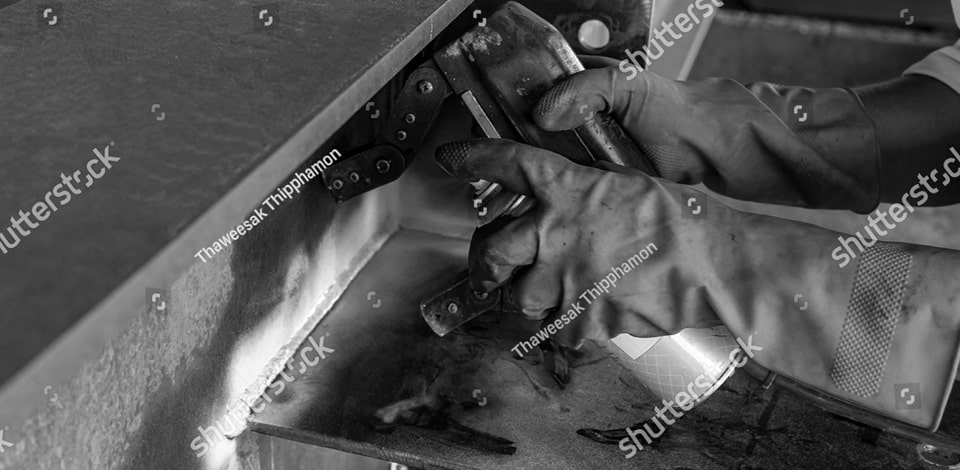
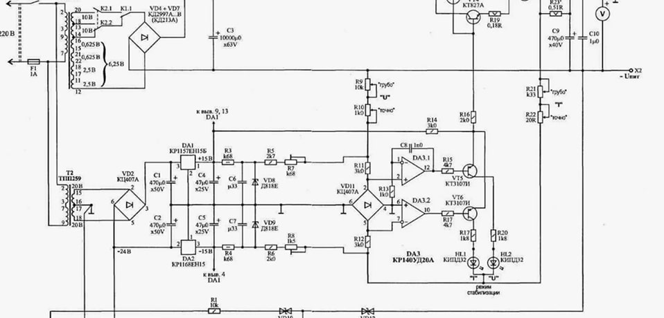
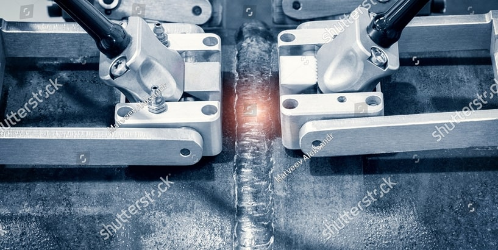

Испытание композитных материалов на изгиб
Испытание на изгиб — метод механических испытаний композитов, который помогает определить прочностные, жесткостные и пластические свойства при изгибающих нагрузках. Оценивает поведение композитных изделий и конструкций в условиях, приближенных к эксплуатационным. Применяется для сертификации и проектирования в авиации, автомобилестроении и строительстве.
Испытания на изгиб для композитных материалов регламентируются следующими стандартами:
ГОСТ Р 56805-2015 «Композиты полимерные. Методы определения механических характеристик при изгибе» — национальный стандарт, регламентирующий методики проведения испытаний, подготовку образцов и оформление результатов.
ISO 178:2010 «Plastics — Determination of flexural properties» — международный стандарт, применимый к полимерам и композитам, с учетом особенностей материалов.
ASTM D790-17 «Standard Test Methods for Flexural Properties of Unreinforced and Reinforced Plastics and Electrical Insulating Materials» — американский стандарт, используемый в международной практике.
Эти стандарты определяют размеры образцов, условия проведения испытаний, методы регистрации данных и расчетные формулы.
Методика проведения испытаний
Образцы изготавливаются в виде брусков или пластин с заданными размерами, соответствующие стандартам. Например, ГОСТ Р 56805-2015 рекомендует размеры: длина (L) — не менее 16-кратной толщины (d), ширина (b) — не менее 10 мм, толщина (d) — в пределах 2–10 мм. Размеры и форма образца выбираются так, чтобы обеспечить равномерное распределение нагрузки и избежать локальных концентраций напряжений. Образцы должны иметь гладкую поверхность без дефектов, трещин, пузырьков и других дефектов, заметных невооруженным глазом, способных повлиять на результаты.
Испытания проводят на универсальных или специальных машинах для испытаний на изгиб, оснащенных:
- Регулятором нагрузки с возможностью точного регулирования усилия.
- Датчиками усилия и деформации. Например, экстензометр- прибор, который измеряет деформацию образца при нагрузке.
- Устройствами для фиксации образца и обеспечения равномерного распределения нагрузки.
Перед проведением испытания необходимо выбрать схему, по которой будет проведена работа, следуя из поставленных задач и нормативно-технической документации на материал. К примеру, в ГОСТ Р 56805-2015 предложены две схемы нагрузок:
Трехточечная схема изгиба — нагрузка прикладывается в центре образца, а опоры расположены по краям. Особенностью этой схемы испытаний, создание максимального напряжения в центре образца.

Порядок проведения испытаний:
- Установка образца в испытательную машину по схеме.
- Постепенное увеличение нагрузки с постоянной скоростью, обычно 1–5 мм/мин.
- Регистрация усилия и деформации в процессе испытания.
- Остановка испытания при достижении предельных условий: разрушения образца или достижения заданной деформации.
Характеристики и интерпретация результатов
- Модуль упругости при изгибе — характеризует жесткость материала и его способность сопротивляться деформациям при изгибе.
- Предел прочности на изгиб — напряжение, которое материал выдерживает без разрушения.
- Пластичность — определяется по отношению деформации к пределу упругости, а также по наличию пластической деформации перед разрушением.
- Коэффициент жесткости — отношение усилия к прогибу в линейной области, характеризующий жесткость конструкции.
Результаты позволяют выявить слабые места, дефекты, а также особенности разрушения композитных материалов, что важно для их последующей эксплуатации.

Важность и применение испытаний для композитов
Испытания на изгиб позволяют:
- Композиты обладают высокой прочностью и жесткостью, но поведение при изгибе может сильно отличаться от металлов.
- Испытания помогают выявить слабые места, дефекты и особенности разрушения.
- Полученные данные позволяют оптимизировать состав и структуру композитных материалов для конкретных задач.
- Оценить поведение композитных материалов при эксплуатационных нагрузках.
- Определить параметры для проектирования и сертификации конструкций.
Испытание композитных материалов на изгиб — важный этап исследований, обеспечивающий получение надежных результатов о механических свойствах. Соблюдение методик, правильная подготовка образцов и точное проведение испытаний позволяют получать достоверные результаты, необходимые для безопасного и продуктивного применения композитных изделий и конструкций в различных сферах.